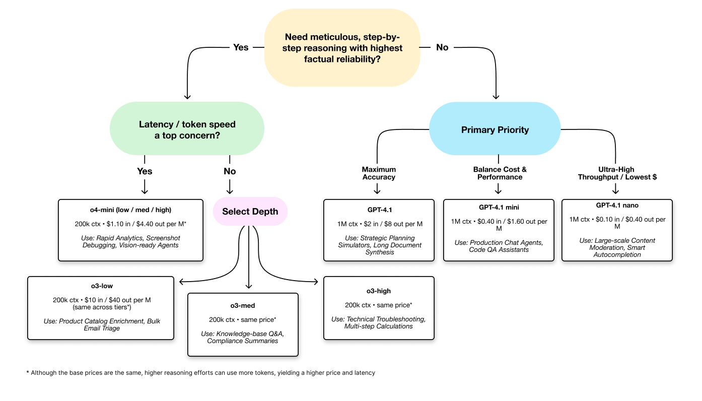

Prototype to Production#
Transitioning a prototype to production requires careful planning and execution. This checklist highlights critical steps, drawing from our flagship use cases, to ensure your deployment is robust, efficient, and meets business goals.
🗂️ TL;DR Matrix#
Checklist Area |
Key Focus / Actions |
Why it Matters |
|---|---|---|
Define Success Criteria |
• Define measurable KPIs & SLOs (accuracy, cost, latency) |
Provides clear targets; proves value |
Document Model Rationale |
• Select initial models deliberately based on trade-offs |
Justifies choices; aids future updates |
Robust Evaluation & Testing |
• Build automated tests (“eval suite”) using a golden set |
Ensures quality; prevents regressions before release |
Observability & Cost |
• Implement essential logging for monitoring & debugging |
Enables tuning; keeps spending within budget |
Safety & Compliance |
• Use safety mechanisms (moderation APIs, prompts) |
Ensures responsible operation; meets requirements |
Model Updates & Versioning |
• Define version pinning strategy |
Maintains stability while allowing improvements |
Define Success Criteria Quantitatively: Move beyond “it works” to measurable targets before major development.
Set Key Performance Indicators (KPIs) & SLOs: Define specific targets for business value (e.g., RAG accuracy > 95%, OCR cost < $X/page) and performance (e.g., P95 latency < 1s, error rates).
Ensure Measurability: Confirm that all KPIs and SLOs can be directly measured from system logs (e.g., tracking total_tokens, critique_status).
Document Initial Model Selection Rationale: Justify your starting model choices for future reference.
Choose Models Deliberately: Use the Model-Intro Matrix and use cases to select appropriate models for each task (e.g., o4-mini for speed/cost, gpt-4.1 for accuracy, o3 for depth).
Record the “Why”: Briefly document the reasoning behind your choices (cost, latency, capability trade-offs) in code comments or design docs so future teams understand the context.
Implement Robust Evaluation & Testing: Verify quality and prevent regressions before shipping changes.
Build an Automated Eval Suite: Create a repeatable test process using a “golden set” (50-100 diverse, expert-verified examples). Focus tests on factuality, hallucination rate, tool-error rate, and task-specific metrics.
Test Reliably: Rigorously test integrated tool reliability (success rate, error handling) and system behavior under load and with edge cases (malformed data, adversarial inputs).
Establish Observability & Cost Controls: Monitor performance and keep spending within budget.
Set Cost Guardrails: Prevent unexpected cost increases by defining max token limits per stage and considering operational modes (“Fast,” “Standard,” “Thorough”) to balance cost and performance.
Implement Essential Logging: Capture key operational data via structured logs for each processing stage to enable debugging and monitoring.
Implement Safety & Compliance Guardrails: Ensure responsible operation and meet requirements.
Use Safety Mechanisms: Employ tools like OpenAI’s moderation APIs, safety-focused system prompts, or sentinel models for checks, especially with user input or sensitive topics.
Enforce Compliance: Build in checks relevant to your specific industry and risks (e.g., legal constraints, lab safety).
Require Human-in-the-Loop (HITL): Mandate human review for low-confidence outputs, high-risk scenarios, or critical decisions, ensuring the workflow flags these items clearly.
Manage Model Updates and Versioning: Prepare for model evolution over time.
Version Pinning Strategy: Decide whether to pin to specific model versions for stability or automatically adopt new versions for improvements.
A/B Testing Framework: Establish a process to evaluate new model versions against your key metrics before full deployment.
Rollback Plan: Create a clear procedure for reverting to previous model versions if issues arise with updates.
Monitor Version Performance: Track metrics across model versions to identify performance trends and inform future selection decisions.
Adaptation Decision Tree#

Communicating Model Selection to Non-Technical Stakeholders#
When explaining your model choices to business stakeholders, focus on these key points:
Align with Business Outcomes: Explain how your model selection directly supports specific business goals (time savings, cost reduction, improved accuracy).
Translate Technical Metrics: Convert technical considerations into business impact:
“This model reduces processing time from 5 seconds to 0.7 seconds, allowing us to handle customer inquiries 7x faster”
“By using the mini variant, we can process 5x more documents within the same budget”
Highlight Trade-offs: Present clear scenarios for different models:
“Option A (GPT-4.1): Highest accuracy but higher cost - ideal for client-facing legal analysis”
“Option B (GPT-4.1 mini): 90% of the accuracy at 30% of the cost - perfect for internal document processing”
Use Concrete Examples: Demonstrate the practical difference in outputs between models to illustrate the value proposition of each option.
Price and Utility Table (Apr 2025)#
Model |
Context Window |
Input Price (per 1M tokens) |
Output Price (per 1M tokens) |
Best For |
|---|---|---|---|---|
GPT-4.1 |
1M |
$2.00 |
$8.00 |
Long-doc analytics, code review |
GPT-4.1 mini |
1M |
$0.40 |
$1.60 |
Production agents, balanced cost/performance |
GPT-4.1 nano |
1M |
$0.10 |
$0.40 |
High-throughput, cost-sensitive applications |
GPT-4o |
128K |
$5.00 |
$15.00 |
Real-time voice/vision chat |
GPT-4o mini |
128K |
$0.15 |
$0.60 |
Vision tasks, rapid analytics |
o3 (low) |
200K |
$10.00* |
$40.00* |
Bulk triage, catalog enrichment |
o3 (med) |
200K |
$10.00* |
$40.00* |
Knowledge base Q&A |
o3 (high) |
200K |
$10.00* |
$40.00* |
Multi-step reasoning, troubleshooting |
o4-mini (low) |
200K |
$1.10* |
$4.40* |
Vision tasks, rapid analytics |
o4-mini (med) |
200K |
$1.10* |
$4.40* |
Balanced vision + reasoning |
o4-mini (high) |
200K |
$1.10* |
$4.40* |
Deep reasoning with cost control |
Note: The low/med/high settings affect token usage rather than base pricing. Higher settings may use more tokens for deeper reasoning, increasing per-request cost and latency.
Prompt-pattern Quick Sheet (Token vs Latency Deltas)#
Prompt Pattern |
Description |
Token Impact |
Latency Impact |
Best Model Fit |
|---|---|---|---|---|
Self-Critique |
Ask model to evaluate its own answer before finalizing |
+20-30% tokens |
+15-25% latency |
GPT-4.1, o3 |
Chain-of-Thought (CoT) |
Explicitly instruct to “think step by step” |
+40-80% tokens |
+30-50% latency |
o3, o4-mini (high) |
Structured Outputs |
Use JSON schema or pydantic models for consistent formatting |
+5-10% tokens |
+5-10% latency |
All models |
Zero-Token Memory |
Store context in external DB rather than in conversation |
-70-90% tokens |
-5-10% latency |
GPT-4.1 family |
Skeleton-Fill-In |
Provide template structure for model to complete |
-10-20% tokens |
-5-15% latency |
o4-mini, GPT-4.1 nano |
Self-Consistency |
Generate multiple answers and select most consistent |
+200-300% tokens |
+150-250% latency |
o3 (high) |
Role-Playing |
Assign specific personas to model for specialized knowledge |
+5-15% tokens |
Neutral |
GPT-4o, o4-mini |
Tournament Ranking |
Compare options pairwise rather than scoring individually |
+50-100% tokens |
+30-60% latency |
o3, o4-mini (high) |
Tool-Calling Reflex |
Prompt model to call tools when uncertainty is detected |
+10-30% tokens |
+20-40% latency |
o3, GPT-4.1 |